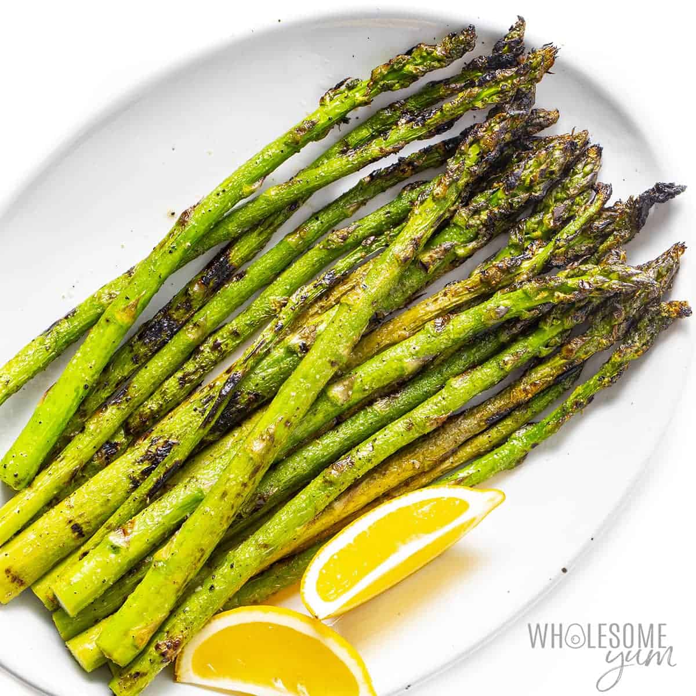

Asparagus

Description
Prep Time: 10 mins
Cook Time: 5min
Total Time: 15min
How to Grill Asparagus?
You'll find a detailed ingredient list and step-by-step instructions in the recipe below, but let's go over the basics:
Grilled Asparagus Ingredients
These are the basic, kitchen staple ingredients you’ll need to make this simple grilled asparagus recipe:
- Asparagus: Start with a pound of fresh, clean, trimmed asparagus.
- Oil: Olive oil keeps the asparagus from drying out and gives the seasonings something to stick to.
- Seasonings: This grilled asparagus is simply seasoned with salt and pepper.
Steps
Wondering how to cook asparagus on the grill? Here’s a brief overview of what you can expect when you make homemade grilled asparagus: Toss the asparagus with olive oil, season, and grill until lightly charred.
- Start with a pound of fresh, clean, trimmed asparagus.
- Olive oil keeps the asparagus from drying out and gives the seasonings something to stick to.
- This grilled asparagus is simply seasoned with salt and pepper.